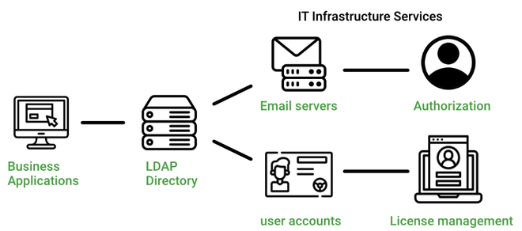

Updated ( 2024-09-19 )
- LDAP (Light Weight Directory Protocol) is a vendor neutral authentication and access control protocol (ex: Microsoft Active Directory implements LDAP)
- it's mostly used in enterprise environment because of the grouped user control (but also usable on public networks)
- it provides hierarchical structure for organizing and storing information about users, computers, and other resources within a network, this allows for centralized management of user accounts, access policies, and other network resources (directory tree)
- LDAP also heavily implements SSO token based authentication
